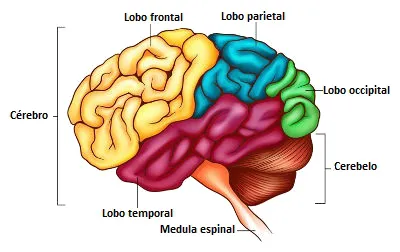

este vídeos está hospedado no meu próprio servidor
As “Binaural Beats” consistem em uma técnica de som que simula áudio 3D por meio de uma ilusão acústica. De modo mais simples, podemos afirmar que são sons ou batidas que escutamos em oscilações diferentes, capazes de estimular o nosso cérebro e alterar nosso comportamento.
video comentando sobre